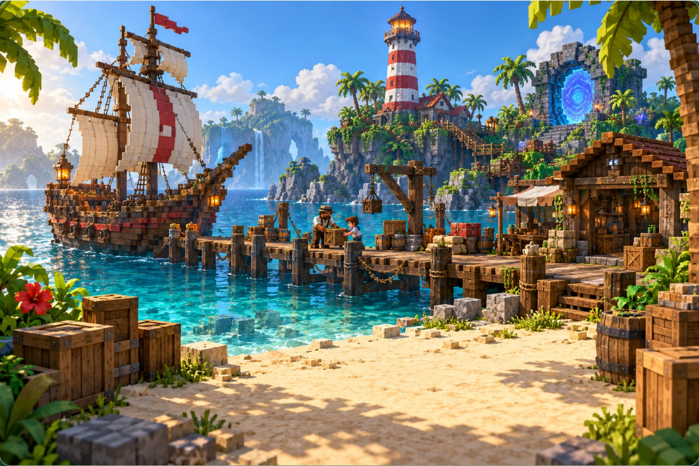
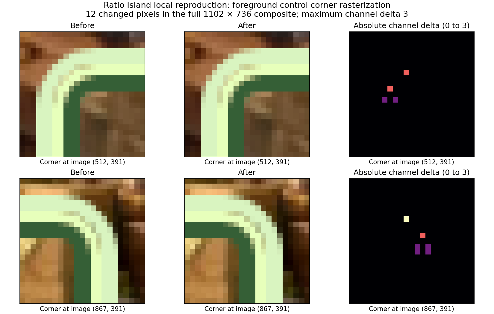
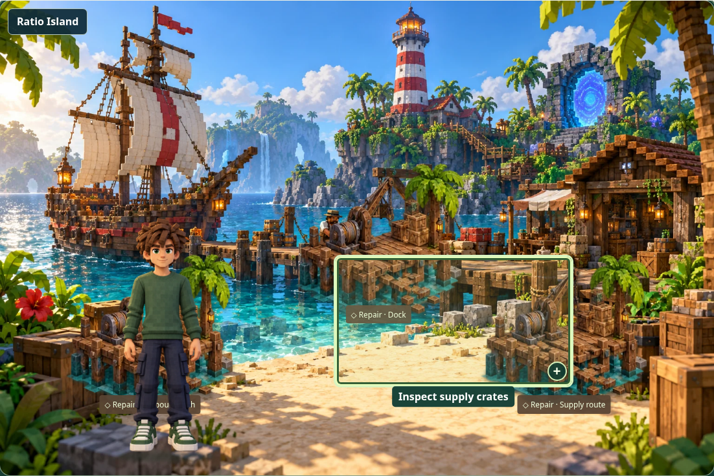

The unchanged iPad landscape case was reproduced locally by repeating the guide toggle and screenshot scroll cycle. The full scene composites differed by 12 pixels, with a maximum colour-channel difference of 3. Ten differences are at rounded corners of the highlighted supply-crates control; two are within its translucent control and label area. The world image and guide do not move.

These lossless PNGs preserve the exact reproduced failure. The background, control and player are composited together.

All changed pixel coordinates and RGB values · Identical layout and hover measurements
The corrected test captures the full background image separately from interactive foreground controls. It still requires byte-for-byte equality, checks image URL, dimensions, position and visual styles, and checks guide identity, alpha, sizing and image-error fallback separately. A test-only grayscale change proves a real background change is detected. Application code and artwork are unchanged.

Physical iPad Safari remains untested. All accounts and server responses in this evidence are fictional intercepted fixtures.